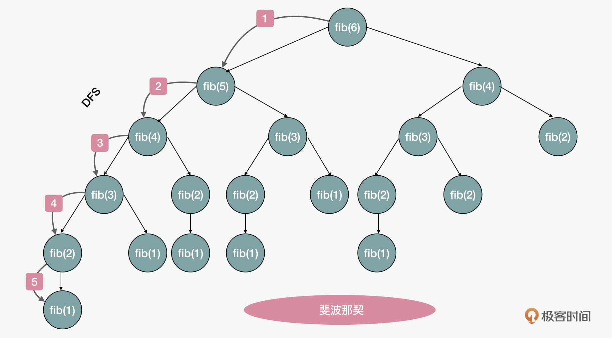
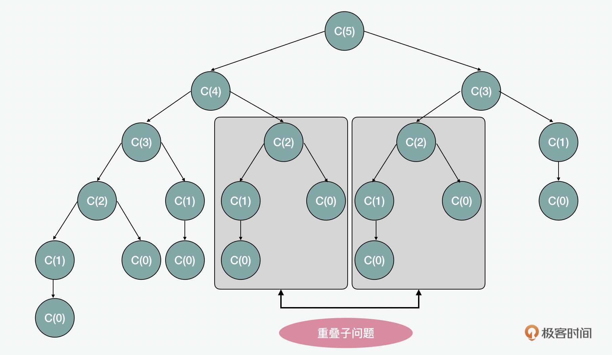
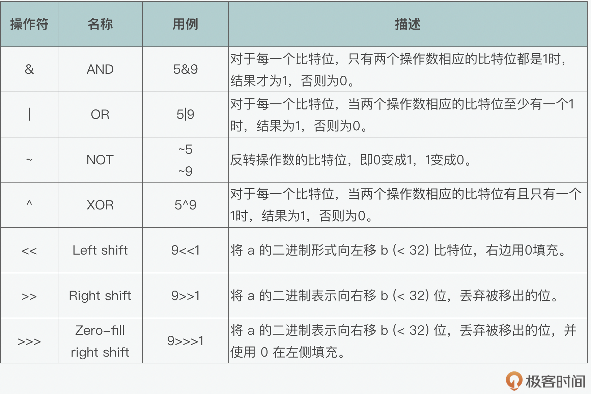

- 00 开篇词 JavaScript的进阶之路.md
- 01 函数式vs.面向对象：响应未知和不确定.md
- 02 如何通过闭包对象管理程序中状态的变化？.md
- 03 如何通过部分应用和柯里化让函数具象化？.md
- 04 如何通过组合、管道和reducer让函数抽象化？.md
- 05 map、reduce和monad如何围绕值进行操作？.md
- 06 如何通过模块化、异步和观察做到动态加载？.md
- 07 深入理解对象的私有和静态属性.md
- 08 深入理解继承、Delegation和组合.md
- 09 面向对象：通过词法作用域和调用点理解this绑定.md
- 10 JS有哪8种数据类型，你需要注意什么？.md
- 11 通过JS引擎的堆栈了解闭包原理.md
- 12 JS语义分析该用迭代还是递归？.md
- 13 JS引擎如何实现数组的稳定排序？.md
- 14 通过SparkPlug深入了解调用栈.md
- 15 如何通过哈希查找JS对象内存地址？.md
- 16 为什么环形队列适合做Node数据流缓存？.md
- 17 如何通过链表做LRU_LFU缓存？.md
- 18 TurboFan如何用图做JS编译优化？.md
- 19 通过树和图看如何在无序中找到路径和秩序.md
- 20 算法思想：JS中分治、贪心、回溯和动态规划.md
- 21 创建型：为什么说Redux可以替代单例状态管理.md
- 22 结构型：Vue.js如何通过代理实现响应式编程.md
- 23 结构型：通过jQuery看结构型模式.md
- 24 行为型：通过观察者、迭代器模式看JS异步回调.md
- 25 行为型：模版、策略和状态模式有什么区别？.md
- 26 特殊型：前端有哪些处理加载和渲染的特殊“模式”？.md
- 27 性能：如何理解JavaScript中的并行、并发？（上）.md
- 28 性能：如何理解JavaScript中的并行、并发？（下）.md
- 29 性能：通过Orinoco、Jank Busters看垃圾回收.md
- 30 网络：从HTTP_1到HTTP_3，你都需要了解什么？.md
- 31 安全：JS代码和程序都需要注意哪些安全问题？.md
- 32 测试（一）：开发到重构中的测试.md
- 33 测试（二）：功能性测试.md
- 34 测试（三）：非功能性测试.md
- 35 静态类型检查：ESLint语法规则和代码风格的检查.md
- 36 Flow：通过Flow类看JS的类型检查.md
- 37 包管理和分发：通过NPM做包的管理和分发.md
- 38 编译和打包：通过Webpack、Babel做编译和打包.md
- 39 语法扩展：通过JSX来做语法扩展.md
- 40 Polyfill：通过Polyfill让浏览器提供原生支持.md
- 41 微前端：从MVC贫血模式到DDD充血模式.md
- 42 大前端：通过一云多端搭建跨PC_移动的平台应用.md
- 43 元编程：通过Proxies和Reflect赋能元编程.md
- 结束语 JavaScript的未来之路：源于一个以终为始的初心.md
20 算法思想：JS中分治、贪心、回溯和动态规划
你好，我是石川。
在算法中，我们提到如递归、分治、贪心、回溯和动态规划这些不同的算法思想时一般会分开来说。但实际上，它们之间是有着关联的。比如递归和回溯可以解决贪心顾及不到或者不能重试的问题。而动态规划又可以在利用递推公式的基础上解决递归中的一些短板。
能够比较好贯穿整个思想的是一个硬币找零的例子，即在几种不同面值硬币中，如何用最少的硬币数量来找零的问题。
贪心和递归分治
首先，我们来看下贪心算法如何解这个题。找零问题的核心是在几种不同面值如1、5、10分的硬币中，用最少的枚数凑出针一个需要找零的钱数。解决这个问题最简单的办法就是使用贪心（greedy）算法，它的核心逻辑是我们先选择面值较大的来找，再逐渐选小面额的。为什么这里是从大到小，而不是从小到大呢？因为通常面值越大，用到的数量就越少。
function minCoinChange(coins, amount) {
var change = [];
var total = 0;
for (let i = coins.length; i >= 0; i--) { // 从大到小循环
var coin = coins[i];
while (total + coin <= amount) { // 将硬币逐个加入，面值要小于商品价格
change.push(coin); // 将硬币加入到结果
total += coin; // 将硬币累加到总数
}
}
return change;
}
贪心是最简单的一种解决方案，可是这种方案有两个核心问题：
- 这种方式有时是得不到答案的，比如我们要找的钱数是17元，此时有面值为3元和5元的硬币。我们用了三张5元的后，还差2元要找，可这时我们只有3元，就没法找了。但如果我们先用3元，可以用四张3元加一张5元，就能得到17元。
- 这种方式得到的答案不一定是最优解。比如我们有面值为1、3、4元的硬币，需要找6元。如果先用4元，就要再加两张1元，这时硬币数一共三张。如果用3元的，只需要两张即可。
所以从运用贪心算法的例子里，我们可以看到，在有些情况下通过贪心算法可以得到局部最优解，可是没法保证全局的最优解，甚至有些时候都没有解。那么有什么更好的方式可以做到找零呢？另一种方式就是用到递归（recursion） 和 分治（divide and conquer） 了。我们先回到之前说过的斐波那契数列。我们看，用递归的方式来求解斐波那契中的例子，这个过程像什么呢？没错，它像是我们上一讲说到的树（tree） 形的数据结构，而且它的遍历过程就如同是一个深度优先（DFS）的遍历顺序。

回溯和记忆函数
而我们所说的硬币找零的例子，和斐波那契相似，它也可以通过这样类似的一棵树来求解。这里我们也可以使用暴力递归的算法。这样，我们可以看到通过暴力枚举的朴素方式，就可以解决贪心带来的问题。但是这样也会带来新的问题，就是重叠子问题（overlapping subproblems）。假设我们有一个5元的商品，和面值为1和2的硬币。那么在找零的过程中，我们可以看到很多的重复计算。这个问题也很像我们之前在解斐波那契时遇到的去重问题。

那我们如何解决重叠子问题呢？拿找零的场景举例，我们可以将贪心和递归结合，通过减枝的方式来优化递归算法。前面我们说过贪心的核心问题之一是没办法回溯，而我们之前在讲到递归的时候，讲到过基于堆栈和栈帧的原理，先从贪心的方法开始尝试，如果成功，就继续执行。如果不成功，就回到上一步，换一种方法执行，这样就解决了类似的问题。而这里面，就用到了回溯（backtracking） 的思想。同样的，我们也可以通过记忆函数创建一个备忘录（memoization），来起到在执行中去重的作用。
递推和动态规划
那如果从上面的例子来看，这和我们之前讲的递归就没有太大不同了。那还有没有解决这个问题更高效的方法呢？下面我们再来看看动态规划（dynamic programming）。这里有两个重要的概念，第一个是无后效性，第二个是最优子结构。后无效性是说，如我们上图中所示，一个顶点下的子问题分支上的问题之间，依赖是单向的，后续的决策不会影响之前某个阶段的状态。而最优子结构指的是子问题之间是相互独立的，我们完全可以只基于子问题路径前面的状态推导出来，而不受其它路径状态的影响。这就好比我们在点外卖时，如果两个商品同时有优惠，那么要达到最大的优惠额度，我们就直接买两个打折后的商品就好了。但是假如折扣只能用于同一订单中的一个产品，那么我们可能就要选单价最高的商品打折。这时，我们的一个分支的选择会影响另外一个分支的选择，这种情况就不能算是最优子结构了。
我们看在找零问题中，没有以上影响。所以我们可以考虑动态优化。在动态规划中，解决问题用的是状态转移方程，其中包含了几个核心的元素，第一个就是初始化状态，它虽然叫初始状态，其实代表的是终止状态。在找零的例子里，我们希望最后找零的结果是0，所以，初始状态就是0。第二个核心元素就是状态参数，它指的是剩下需要找的零钱。我们每次在找零的过程中，就是这个状态在不断消减的过程，也就是最后它应该归零，达到初始状态。在上面的决策树中，我们看到每次选择的过程中，我们都要在一组集合中选中一种面值的硬币，这种选择，就是决策。
对于找零来说，我们可以写出状态转移方程$\(min(DP\[i\], DP(i-coin)+1)\)\(它的思考模式就是我们之前讲递归的一讲中提到**递推公式**时的思考模式，也就是说，我们自底而上的思考，如果我们决定用一枚硬币，那么就要加\)DP(i-coin)+1\(。如果我们不采用，那就是\)DP[i]\(。因为这是一个求最值的问题，所以我们通过\)min()$来对比两种决策中最小的值。
这时，你可能会有一个疑问，如果状态转移方程就是个递推公式，那为啥我们不直接用递归呢？动态规划和它有啥区别？这是因为如我们之前所讲，递归的特点是一递一归，先自上而下深度优先遍历的，这个过程是基于堆栈的原理实现的，就会产生额外的花费。而且从上到下的过程中，不能完全避免冗余的分支计算。所以为了解决这个问题，动态规划就派上用场了。它是通过两层嵌套的迭代循环，在内循环中，用到转移方程，自下而上的计算，解决了不必要的时间消耗。这样看，它可能不是那么函数式（声明式），而更命令式，但是它确实在执行效率上会更高。
function minCoinChange(coins, amount) {
var dp = Array(amount + 1).fill(Infinity); // 每种硬币需要多少
dp[0] = 0; // 找0元，需要0个硬币
for (let coin of coins) { // 循环每种硬币
for (let i = coin; i <= amount; i++) { // 遍历所有数量
dp[i] = Math.min(dp[i], dp[i - coin] + 1); // 更新最少需要用到的面值
}
}
return dp[amount] === Infinity ? -1 : dp[amount]; // 如果最后一个是无限的，没法找
}
所以如果我们追求的是效率的话，那么动态规划在这个例子中是最高的。
延伸：位运算符
讲完以上几种算法，我还想再延伸一点知识。在数据结构和算法中，除了动态规划外，还有哪些可以提高性能的算法思想呢？这里我们可以结合JavaScript的特性看看位运算（bitwise operation）的使用和思想。
在JavaScript中，整数都是32位的由0和1表示的二进制比特序列。举个例子，在位运算中，101就代表5可以用101来表示，9可以用1001来表示。
按位与（& AND）表示的是，对于每一个比特位，如果两个操作数相应的比特位都是1时，结果则为1，否则为0。 比如5&9的运算结果就是0001，也就是1。
0 0 0 0 0 0 0 0 0 0 0 0 0 0 0 0 0 0 0 0 0 0 0 0 0 0 0 0 0 1 0 1 // 5
0 0 0 0 0 0 0 0 0 0 0 0 0 0 0 0 0 0 0 0 0 0 0 0 0 0 0 0 1 0 0 1 // 9
0 0 0 0 0 0 0 0 0 0 0 0 0 0 0 0 0 0 0 0 0 0 0 0 0 0 0 0 0 0 0 1 // 5&9
那么以此类推，对于按位或（I OR）来说，针对每一个比特位，当两个操作数相应的比特位至少有一个1时，结果为1，否则为0。比如 5|9的运算结果就是1 1 0 1，也就是13。
0 0 0 0 0 0 0 0 0 0 0 0 0 0 0 0 0 0 0 0 0 0 0 0 0 0 0 0 0 1 0 1 // 5
0 0 0 0 0 0 0 0 0 0 0 0 0 0 0 0 0 0 0 0 0 0 0 0 0 0 0 0 1 0 0 1 // 9
0 0 0 0 0 0 0 0 0 0 0 0 0 0 0 0 0 0 0 0 0 0 0 0 0 0 0 0 1 1 0 1 // 5|9
那么对于按位非（~ NOT）来说，指的则是反转操作数的比特位，即0变成1，1变成0。那么~5的运算结果就是-6，~9的运算结果就是-10。
0 0 0 0 0 0 0 0 0 0 0 0 0 0 0 0 0 0 0 0 0 0 0 0 0 0 0 0 0 1 0 1 // 5
1 1 1 1 1 1 1 1 1 1 1 1 1 1 1 1 1 1 1 1 1 1 1 1 1 1 1 1 1 0 1 0 // -5
0 0 0 0 0 0 0 0 0 0 0 0 0 0 0 0 0 0 0 0 0 0 0 0 0 0 0 0 1 0 0 1 // 9
1 1 1 1 1 1 1 1 1 1 1 1 1 1 1 1 1 1 1 1 1 1 1 1 1 1 1 1 0 1 1 0 // -9
接下来我们再看看按位异或（^ XOR），它的操作是对于每一个比特位，当两个操作数相应的比特位有且只有一个1时，结果为1，否则为0。那么5^9的运算结果就是1 1 0 0，也就是12。
0 0 0 0 0 0 0 0 0 0 0 0 0 0 0 0 0 0 0 0 0 0 0 0 0 0 0 0 0 1 0 1 // 5
0 0 0 0 0 0 0 0 0 0 0 0 0 0 0 0 0 0 0 0 0 0 0 0 0 0 0 0 1 0 0 1 // 9
0 0 0 0 0 0 0 0 0 0 0 0 0 0 0 0 0 0 0 0 0 0 0 0 0 0 0 0 1 1 0 0 // 5^9
下面我们再来看看位移。这里又分为左移（<< Left shift），有符号右移（>> Right shift）和无符号右移（>>> Zero-fill right shift）。左移会将 a 的二进制形式向左移 b (< 32) 比特位，右边用0填充，所以9<<1的结果就是18。而有符号右移则会将 a 的二进制表示向右移 b (< 32) 位，丢弃被移出的位，所以9>>1的结果就是4。最后无符号右移会将 a 的二进制表示向右移 b (< 32) 位，丢弃被移出的位，并使用 0 在左侧填充，所以9>>1的结果就是2147483643。
0 0 0 0 0 0 0 0 0 0 0 0 0 0 0 0 0 0 0 0 0 0 0 0 0 0 0 0 1 0 0 1 // 9
0 0 0 0 0 0 0 0 0 0 0 0 0 0 0 0 0 0 0 0 0 0 0 0 0 0 0 1 0 0 1 0 // 9 << 1
0 0 0 0 0 0 0 0 0 0 0 0 0 0 0 0 0 0 0 0 0 0 0 0 0 0 0 0 0 1 0 0 // 9 >> 1
0 1 1 1 1 1 1 1 1 1 1 1 1 1 1 1 1 1 1 1 1 1 1 1 1 1 1 1 1 0 1 1 // 9 >>> 1
我们可以用一个列表来总结下相关的操作符，这样看起来更直观。

那么学会了位运算后，我们的加减乘除都可以通过位运算来计算。比如加法计算就可以用位运算来进行，这和我们小学时学的数学是一样的，我们在学10进制的加法时，就是在遇到10的时候，进一位。同样的方式，也可以用于位运算。这里同样可以用到递归或循环。下面，你可以参考一个递归的例子。
var add = function(a, b) {
if (b == 0) {
return a;
} else {
return add(a ^ b, (a & b) << 1);
}
};
位运算从一定程度上可以让计算的效率更高，但是这样也会牺牲一定的可读性。所以在使用上，应该综合考虑。
总结
这节课就到这里，最后我来做个小结。今天，我们看到了算法中的贪心、递归、分治、回溯和动态规划并不是完全独立的，它们在某种意义上是相连的。其实算法思想不光是用在程序中，如果我们仔细观察不同行业很成功的人和团队，多多少少都能发现他们具有算法思想。比如在当年解放战争时期，为什么解放军能赢，就是用到了类似分治和动态规划的思想。看似以少胜多，但每次通过分治，可以在局部以多胜少。同时通过动态规划防止局部成功来带的贪心思想，而是时刻关注着全局最优解，最后取得了全面的胜利。所以通过JS的原理，学好算法，不仅仅是纸上谈兵，而是可以在工作和生活的方方面面帮助我们“运筹帷幄之中，决胜千里之外”。
思考题
今天的思考题是，关于找零的问题，除了贪心和动态规划的实现，你能不能也用文中提到的递归和回溯来动手实现下找零。
期待在留言区看到你的分享，我们一起交流讨论。另外，也欢迎你把今天的内容分享给更多的朋友。我们下期再见！
© 2019 - 2023 Liangliang Lee. Powered by gin and hexo-theme-book.